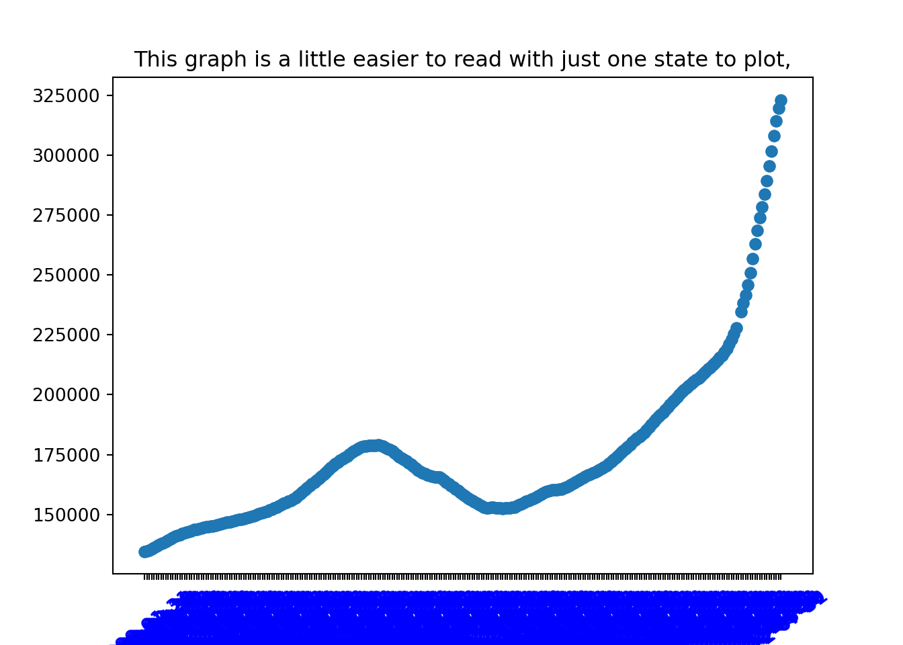
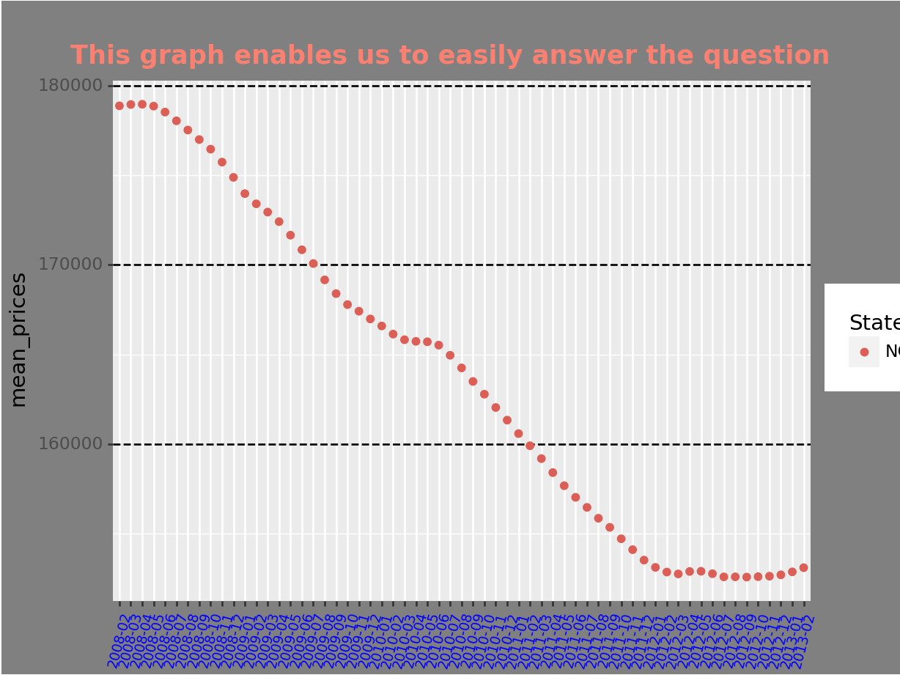

<!DOCTYPE html>
<html xmlns="http://www.w3.org/1999/xhtml" lang="en" xml:lang="en"><head>

<html>
 
  <body style="background-color:#E7F9DF;">
  
  </body>
</html>
  
<meta charset="utf-8">
<meta name="generator" content="quarto-1.1.251">

<meta name="viewport" content="width=device-width, initial-scale=1.0, user-scalable=yes">


<title>R_and_Python_Working Together</title>
<style>
code{white-space: pre-wrap;}
span.smallcaps{font-variant: small-caps;}
div.columns{display: flex; gap: min(4vw, 1.5em);}
div.column{flex: auto; overflow-x: auto;}
div.hanging-indent{margin-left: 1.5em; text-indent: -1.5em;}
ul.task-list{list-style: none;}
ul.task-list li input[type="checkbox"] {
  width: 0.8em;
  margin: 0 0.8em 0.2em -1.6em;
  vertical-align: middle;
}
pre > code.sourceCode { white-space: pre; position: relative; }
pre > code.sourceCode > span { display: inline-block; line-height: 1.25; }
pre > code.sourceCode > span:empty { height: 1.2em; }
.sourceCode { overflow: visible; }
code.sourceCode > span { color: inherit; text-decoration: inherit; }
div.sourceCode { margin: 1em 0; }
pre.sourceCode { margin: 0; }
@media screen {
div.sourceCode { overflow: auto; }
}
@media print {
pre > code.sourceCode { white-space: pre-wrap; }
pre > code.sourceCode > span { text-indent: -5em; padding-left: 5em; }
}
pre.numberSource code
  { counter-reset: source-line 0; }
pre.numberSource code > span
  { position: relative; left: -4em; counter-increment: source-line; }
pre.numberSource code > span > a:first-child::before
  { content: counter(source-line);
    position: relative; left: -1em; text-align: right; vertical-align: baseline;
    border: none; display: inline-block;
    -webkit-touch-callout: none; -webkit-user-select: none;
    -khtml-user-select: none; -moz-user-select: none;
    -ms-user-select: none; user-select: none;
    padding: 0 4px; width: 4em;
    color: #aaaaaa;
  }
pre.numberSource { margin-left: 3em; border-left: 1px solid #aaaaaa;  padding-left: 4px; }
div.sourceCode
  {   }
@media screen {
pre > code.sourceCode > span > a:first-child::before { text-decoration: underline; }
}
code span.al { color: #ff0000; font-weight: bold; } /* Alert */
code span.an { color: #60a0b0; font-weight: bold; font-style: italic; } /* Annotation */
code span.at { color: #7d9029; } /* Attribute */
code span.bn { color: #40a070; } /* BaseN */
code span.bu { color: #008000; } /* BuiltIn */
code span.cf { color: #007020; font-weight: bold; } /* ControlFlow */
code span.ch { color: #4070a0; } /* Char */
code span.cn { color: #880000; } /* Constant */
code span.co { color: #60a0b0; font-style: italic; } /* Comment */
code span.cv { color: #60a0b0; font-weight: bold; font-style: italic; } /* CommentVar */
code span.do { color: #ba2121; font-style: italic; } /* Documentation */
code span.dt { color: #902000; } /* DataType */
code span.dv { color: #40a070; } /* DecVal */
code span.er { color: #ff0000; font-weight: bold; } /* Error */
code span.ex { } /* Extension */
code span.fl { color: #40a070; } /* Float */
code span.fu { color: #06287e; } /* Function */
code span.im { color: #008000; font-weight: bold; } /* Import */
code span.in { color: #60a0b0; font-weight: bold; font-style: italic; } /* Information */
code span.kw { color: #007020; font-weight: bold; } /* Keyword */
code span.op { color: #666666; } /* Operator */
code span.ot { color: #007020; } /* Other */
code span.pp { color: #bc7a00; } /* Preprocessor */
code span.sc { color: #4070a0; } /* SpecialChar */
code span.ss { color: #bb6688; } /* SpecialString */
code span.st { color: #4070a0; } /* String */
code span.va { color: #19177c; } /* Variable */
code span.vs { color: #4070a0; } /* VerbatimString */
code span.wa { color: #60a0b0; font-weight: bold; font-style: italic; } /* Warning */
</style>


<script src="R_python_test_files/libs/clipboard/clipboard.min.js"></script>
<script src="R_python_test_files/libs/quarto-html/quarto.js"></script>
<script src="R_python_test_files/libs/quarto-html/popper.min.js"></script>
<script src="R_python_test_files/libs/quarto-html/tippy.umd.min.js"></script>
<script src="R_python_test_files/libs/quarto-html/anchor.min.js"></script>
<link href="R_python_test_files/libs/quarto-html/tippy.css" rel="stylesheet">
<link href="R_python_test_files/libs/quarto-html/quarto-syntax-highlighting.css" rel="stylesheet" id="quarto-text-highlighting-styles">
<script src="R_python_test_files/libs/bootstrap/bootstrap.min.js"></script>
<link href="R_python_test_files/libs/bootstrap/bootstrap-icons.css" rel="stylesheet">
<link href="R_python_test_files/libs/bootstrap/bootstrap.min.css" rel="stylesheet" id="quarto-bootstrap" data-mode="light">


</head>

<body class="fullcontent">

<div id="quarto-content" class="page-columns page-rows-contents page-layout-article">

<main class="content" id="quarto-document-content">

<header id="title-block-header" class="quarto-title-block default">
<div class="quarto-title">
<h1 class="title">R_and_Python_Working Together</h1>
</div>


<div class="quarto-title-meta">

    
    
  </div>
  

</header>

<section id="python-in-rstudio" class="level1">
<h1>Python in Rstudio</h1>
<div class="cell">

</div>
</section>
<section id="evaluating-with-r" class="level1">
<h1>Evaluating with R:</h1>
<p>In this section I am evaluating the data to see what the content for the Zillow home value index(ZHVI) is.<br>
 We will see what the names of the columns and a general summary for the columns. <br>
 We can do a lot more with R but this task is more about what we can do with python.
 </p>
<div class="cell">
<div class="sourceCode cell-code" id="cb1"><pre class="sourceCode r code-with-copy"><code class="sourceCode r"><span id="cb1-1"><a href="#cb1-1" aria-hidden="true" tabindex="-1"></a><span class="fu">head</span>(Housing_Zillow,<span class="dv">2</span>)</span></code><button title="Copy to Clipboard" class="code-copy-button"><i class="bi"></i></button></pre></div>
<div class="cell-output cell-output-stdout">
<pre><code># A tibble: 2 × 4
  RegionName StateName year       mean_prices
  &lt;chr&gt;      &lt;chr&gt;     &lt;chr&gt;            &lt;dbl&gt;
1 California CA        2000-01-31      199988
2 California CA        2000-02-29      200838</code></pre>
</div>
<div class="sourceCode cell-code" id="cb3"><pre class="sourceCode r code-with-copy"><code class="sourceCode r"><span id="cb3-1"><a href="#cb3-1" aria-hidden="true" tabindex="-1"></a><span class="fu">tail</span>(Housing_Zillow,<span class="dv">2</span>)</span></code><button title="Copy to Clipboard" class="code-copy-button"><i class="bi"></i></button></pre></div>
<div class="cell-output cell-output-stdout">
<pre><code># A tibble: 2 × 4
  RegionName StateName year       mean_prices
  &lt;chr&gt;      &lt;chr&gt;     &lt;chr&gt;            &lt;dbl&gt;
1 Wyoming    WY        2022-06-30      321393
2 Wyoming    WY        2022-07-31      323793</code></pre>
</div>
<div class="sourceCode cell-code" id="cb5"><pre class="sourceCode r code-with-copy"><code class="sourceCode r"><span id="cb5-1"><a href="#cb5-1" aria-hidden="true" tabindex="-1"></a><span class="co">#colnames(Housing_Zillow)  # this is redundant if you are also doing a summary</span></span>
<span id="cb5-2"><a href="#cb5-2" aria-hidden="true" tabindex="-1"></a>df <span class="ot">&lt;-</span> Housing_Zillow</span>
<span id="cb5-3"><a href="#cb5-3" aria-hidden="true" tabindex="-1"></a><span class="fu">summary</span>(df)</span></code><button title="Copy to Clipboard" class="code-copy-button"><i class="bi"></i></button></pre></div>
<div class="cell-output cell-output-stdout">
<pre><code>  RegionName         StateName             year            mean_prices    
 Length:13821       Length:13821       Length:13821       Min.   : 69390  
 Class :character   Class :character   Class :character   1st Qu.:138690  
 Mode  :character   Mode  :character   Mode  :character   Median :187479  
                                                          Mean   :213821  
                                                          3rd Qu.:254413  
                                                          Max.   :909473  
                                                          NA's   :255     </code></pre>
</div>
</div>
</section>
<section id="python-section" class="level1">
<h1>Python section:</h1>
<p> Ultimately the goal is to get data that can be interpreted this easily: </p>
<p>The data.info() provides valuable insight quickly by providing the number of columns, the types of data in each column and the quantity<br>
 of null values in each column. This data is used to expedite the cleaning process and speed things along rather than searching for items<br>
 needing cleaning before beginning to analyze the data. The data.describe() provides us with statistical information that could be useful <br>
 if we want to replace null values with a mean, median, or some other method.
 </p>
<div class="cell">
<div class="cell-output cell-output-stdout">
<pre><code>This is a count for how many Nulls are in each column: 
 RegionName       0
StateName        0
year             0
mean_prices    255
dtype: int64</code></pre>
</div>
<div class="cell-output cell-output-stdout">
<pre><code>Min Value:  69390.0</code></pre>
</div>
<div class="cell-output cell-output-stdout">
<pre><code>Max Value:  909473.0</code></pre>
</div>
<div class="cell-output cell-output-stdout">
<pre><code>Rounded Mean Value:  213820.84</code></pre>
</div>
<div class="cell-output cell-output-stdout">
<pre><code>Data Shape:  (13821, 4)</code></pre>
</div>
<div class="cell-output cell-output-stdout">
<pre><code>Column:  Index(['RegionName', 'StateName', 'year', 'mean_prices'], dtype='object')</code></pre>
</div>
<div class="cell-output cell-output-stdout">
<pre><code>&lt;class 'pandas.core.frame.DataFrame'&gt;
RangeIndex: 13821 entries, 0 to 13820
Data columns (total 4 columns):
 #   Column       Non-Null Count  Dtype  
---  ------       --------------  -----  
 0   RegionName   13821 non-null  object 
 1   StateName    13821 non-null  object 
 2   year         13821 non-null  object 
 3   mean_prices  13566 non-null  float64
dtypes: float64(1), object(3)
memory usage: 432.0+ KB
Basic info:  None</code></pre>
</div>
<div class="cell-output cell-output-stdout">
<pre><code>A Statistical Summary for the data:           mean_prices
count   13566.000000
mean   213820.844906
std    105532.351446
min     69390.000000
25%    138690.000000
50%    187479.000000
75%    254413.000000
max    909473.000000</code></pre>
</div>
</div>
<p>
 This section will take the provided data and produce several graphs with an increasing focus that should aid in better decision making.<br>
 While each graph is improving upon the upon the last these graphs are far from useful and must be zoomed in on a specific portion of the <br>
 graphs to provide answers to questions that are presented.
</p>
 
<div class="cell">
<div class="sourceCode cell-code" id="cb15"><pre class="sourceCode python code-with-copy"><code class="sourceCode python"><span id="cb15-1"><a href="#cb15-1" aria-hidden="true" tabindex="-1"></a><span class="co"># from plotnine import *   Needed to produce the ggplots</span></span>
<span id="cb15-2"><a href="#cb15-2" aria-hidden="true" tabindex="-1"></a>ggplot(df, aes(<span class="st">"year"</span>, <span class="st">"mean_prices"</span>,color<span class="op">=</span><span class="st">"StateName"</span>))<span class="op">+</span> geom_point()<span class="op">+</span>labs(title <span class="op">=</span> <span class="st">"All the States that will fit in one BUSY graph"</span>) </span></code><button title="Copy to Clipboard" class="code-copy-button"><i class="bi"></i></button></pre></div>
<div class="cell-output-display">
<p></p>
</div>
<div class="sourceCode cell-code" id="cb16"><pre class="sourceCode python code-with-copy"><code class="sourceCode python"><span id="cb16-1"><a href="#cb16-1" aria-hidden="true" tabindex="-1"></a>df1 <span class="op">=</span> df.loc[df[<span class="st">'StateName'</span>] <span class="op">==</span> <span class="st">"NC"</span>]  <span class="co"># this locates a value within a column and saves to new df</span></span>
<span id="cb16-2"><a href="#cb16-2" aria-hidden="true" tabindex="-1"></a>fig, ax <span class="op">=</span> plt.subplots()                                  <span class="co"># creates subplots to overlay plots on top of one another</span></span>
<span id="cb16-3"><a href="#cb16-3" aria-hidden="true" tabindex="-1"></a>ax.plot(df1[<span class="st">"year"</span>], df1[<span class="st">"mean_prices"</span>], <span class="st">'o'</span>)</span>
<span id="cb16-4"><a href="#cb16-4" aria-hidden="true" tabindex="-1"></a>plt.title(<span class="st">"This graph is a little easier to read with just one state to plot,"</span>)                       <span class="co"># this adds a title to the graph</span></span>
<span id="cb16-5"><a href="#cb16-5" aria-hidden="true" tabindex="-1"></a>plt.xticks(fontweight<span class="op">=</span><span class="st">'bold'</span>, color<span class="op">=</span><span class="st">'blue'</span>, rotation<span class="op">=</span><span class="dv">37</span>)  <span class="co"># This adds a blue color to the x-axis labels and rotates the to 37 degrees</span></span></code><button title="Copy to Clipboard" class="code-copy-button"><i class="bi"></i></button></pre></div>
<div class="sourceCode cell-code" id="cb17"><pre class="sourceCode python code-with-copy"><code class="sourceCode python"><span id="cb17-1"><a href="#cb17-1" aria-hidden="true" tabindex="-1"></a>plt.show()                                                 <span class="co"># this shows the plot</span></span></code><button title="Copy to Clipboard" class="code-copy-button"><i class="bi"></i></button></pre></div>
<div class="cell-output-display">
<p></p>
</div>
</div>
<p>While the second graph is easier to read, I can’t read the bottom at all and it may make the graph worthless for interpretation. If I zoom in and cut down some of the elements I can get a better glimpse as to what we are looking at.</p>
<div class="cell">
<div class="sourceCode cell-code" id="cb18"><pre class="sourceCode python code-with-copy"><code class="sourceCode python"><span id="cb18-1"><a href="#cb18-1" aria-hidden="true" tabindex="-1"></a></span>
<span id="cb18-2"><a href="#cb18-2" aria-hidden="true" tabindex="-1"></a>ggplot(df1, aes(<span class="st">"year"</span>, <span class="st">"mean_prices"</span>, color<span class="op">=</span> <span class="st">"StateName"</span>))<span class="op">+</span> geom_point()<span class="op">+</span>labs(title<span class="op">=</span><span class="st">"This graph is even easier to read wth the focused observation area"</span>) <span class="co"># + coord_cartesian(xlim:(2006,2013))</span></span></code><button title="Copy to Clipboard" class="code-copy-button"><i class="bi"></i></button></pre></div>
<div class="cell-output cell-output-stdout">
<pre><code>&lt;ggplot: (158175270578)&gt;

C:\Users\ducat\AppData\Roaming\Python\Python38\site-packages\plotnine\layer.py:412: PlotnineWarning: geom_point : Removed 1 rows containing missing values.</code></pre>
</div>
<div class="cell-output-display">
<p></p>
</div>
</div>
</section>

</main>
<!-- /main column -->
<script id="quarto-html-after-body" type="application/javascript">
window.document.addEventListener("DOMContentLoaded", function (event) {
  const toggleBodyColorMode = (bsSheetEl) => {
    const mode = bsSheetEl.getAttribute("data-mode");
    const bodyEl = window.document.querySelector("body");
    if (mode === "dark") {
      bodyEl.classList.add("quarto-dark");
      bodyEl.classList.remove("quarto-light");
    } else {
      bodyEl.classList.add("quarto-light");
      bodyEl.classList.remove("quarto-dark");
    }
  }
  const toggleBodyColorPrimary = () => {
    const bsSheetEl = window.document.querySelector("link#quarto-bootstrap");
    if (bsSheetEl) {
      toggleBodyColorMode(bsSheetEl);
    }
  }
  toggleBodyColorPrimary();  
  const icon = "";
  const anchorJS = new window.AnchorJS();
  anchorJS.options = {
    placement: 'right',
    icon: icon
  };
  anchorJS.add('.anchored');
  const clipboard = new window.ClipboardJS('.code-copy-button', {
    target: function(trigger) {
      return trigger.previousElementSibling;
    }
  });
  clipboard.on('success', function(e) {
    // button target
    const button = e.trigger;
    // don't keep focus
    button.blur();
    // flash "checked"
    button.classList.add('code-copy-button-checked');
    var currentTitle = button.getAttribute("title");
    button.setAttribute("title", "Copied!");
    setTimeout(function() {
      button.setAttribute("title", currentTitle);
      button.classList.remove('code-copy-button-checked');
    }, 1000);
    // clear code selection
    e.clearSelection();
  });
  function tippyHover(el, contentFn) {
    const config = {
      allowHTML: true,
      content: contentFn,
      maxWidth: 500,
      delay: 100,
      arrow: false,
      appendTo: function(el) {
          return el.parentElement;
      },
      interactive: true,
      interactiveBorder: 10,
      theme: 'quarto',
      placement: 'bottom-start'
    };
    window.tippy(el, config); 
  }
  const noterefs = window.document.querySelectorAll('a[role="doc-noteref"]');
  for (var i=0; i<noterefs.length; i++) {
    const ref = noterefs[i];
    tippyHover(ref, function() {
      // use id or data attribute instead here
      let href = ref.getAttribute('data-footnote-href') || ref.getAttribute('href');
      try { href = new URL(href).hash; } catch {}
      const id = href.replace(/^#\/?/, "");
      const note = window.document.getElementById(id);
      return note.innerHTML;
    });
  }
  var bibliorefs = window.document.querySelectorAll('a[role="doc-biblioref"]');
  for (var i=0; i<bibliorefs.length; i++) {
    const ref = bibliorefs[i];
    const cites = ref.parentNode.getAttribute('data-cites').split(' ');
    tippyHover(ref, function() {
      var popup = window.document.createElement('div');
      cites.forEach(function(cite) {
        var citeDiv = window.document.createElement('div');
        citeDiv.classList.add('hanging-indent');
        citeDiv.classList.add('csl-entry');
        var biblioDiv = window.document.getElementById('ref-' + cite);
        if (biblioDiv) {
          citeDiv.innerHTML = biblioDiv.innerHTML;
        }
        popup.appendChild(citeDiv);
      });
      return popup.innerHTML;
    });
  }
});
</script>
</div> <!-- /content -->


</body></html>
